Mechanical/Robotics Engineering Portfolio
Dylan Zelko
Robotics graduate student with a bachelor's in Mechanical Engineering focused on space robotics, autonomous systems, and additive manufacturing.
Projects
Contact for more detailsExperience
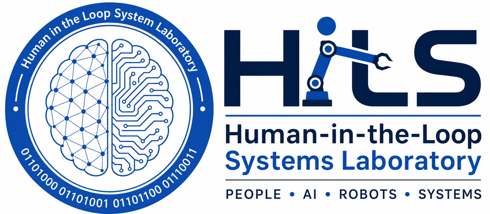
Scientific Researcher, Human In The Loop Systems Lab
Redesigned a variable-stiffness robotic arm carriage attachment to improve modularity, reliability, packaging, and future testing on a factory robotic arm.
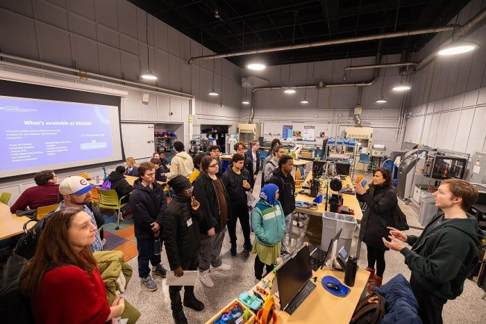
Graduate Research Assistant, Digital Manufacturing Lab
Manage 3D printing work orders using FDM, SLA, PolyJet, and continuous fiber fabrication technologies while supporting digital manufacturing workflows at the University at Buffalo.
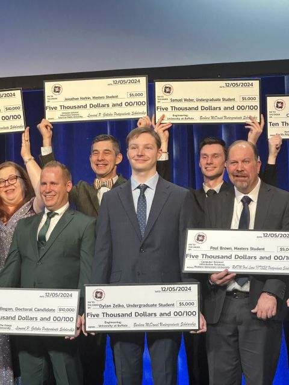
Graduate Teaching Assistant, MAE 451 and 494
Provide detailed feedback on senior design projects, including mechanical designs, CAD models, technical documentation, and engineering communication.
Project Lead, UB Lunabotics
Lead mechanical CAD design and fabrication for a lunar rover, including custom wheels, modular chassis work, and competition-focused system development.
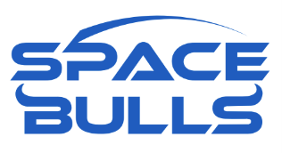
Founder and Project Lead, UB Space Bulls
Founded and led a multidisciplinary rover research team focused on designing and building next-generation systems for the Mars Society University Rover Challenge.
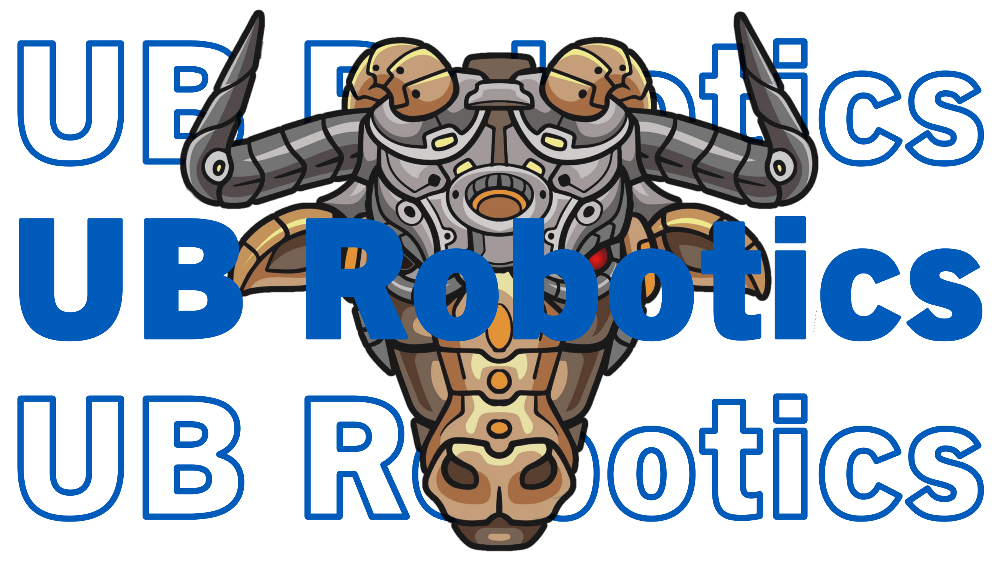
President and Project Lead, Robotics Club
Served as president of UB Robotics Club, leading student robotics projects and competitions including BattleBots-style builds and VEX Robotics.
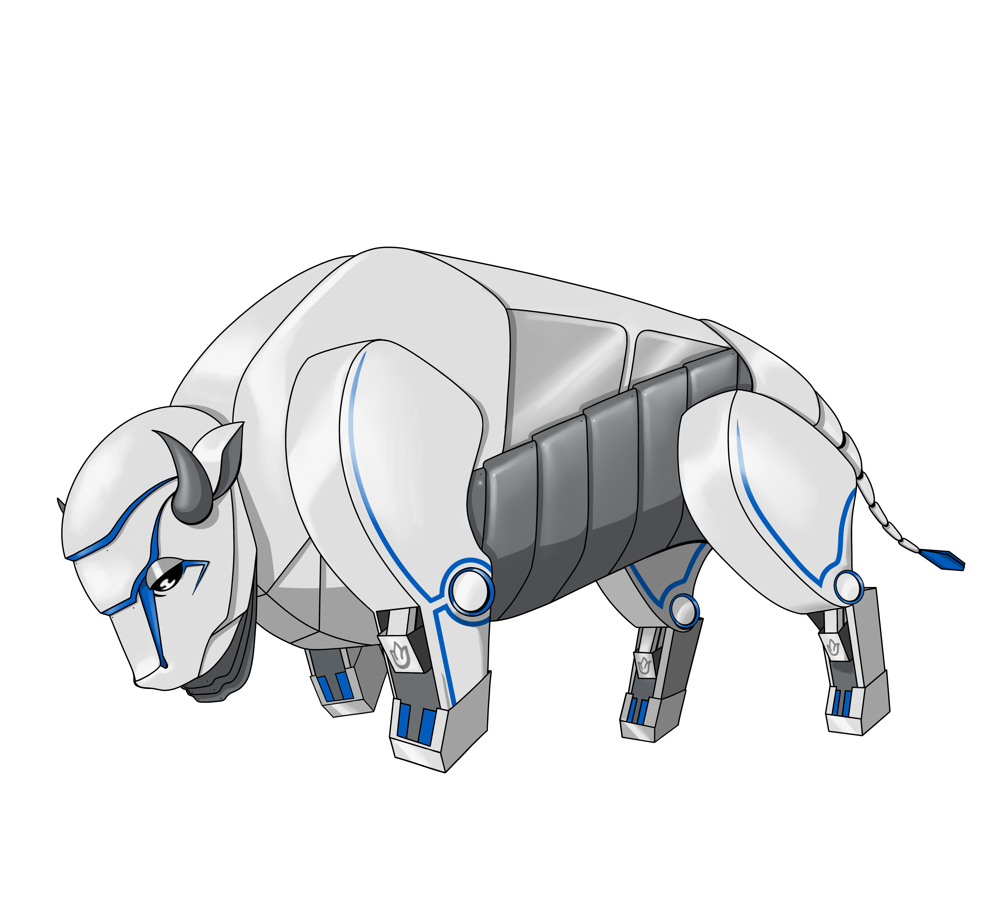
Scientific Researcher, Robot Form and Function Lab
Optimized a bioinspired robot hexapod for ease of assembly and modularity.
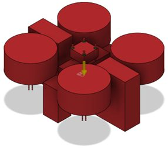
Student Leader, Search and Rescue Drone Instrument
Led student work on an affordable drone concept for search and rescue applications, guiding design, fabrication, and prototyping efforts.
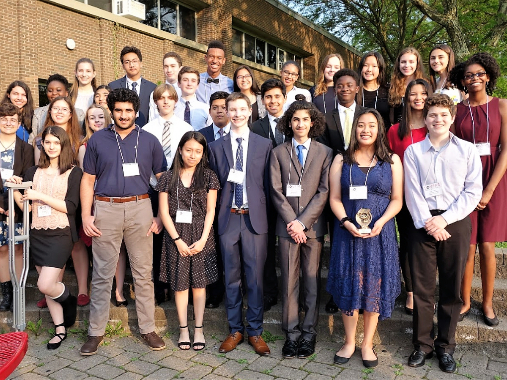
Scientific Researcher, Medical Electronics Lab
Conducted independent biomedical engineering research on textile electrodes for wearable heart-failure monitoring and presented findings at science fairs.
Education
Master of Science, Robotics
University at Buffalo, School of Engineering and Applied Sciences.
Bachelor of Science, Mechanical Engineering
Minor in Robotics, University at Buffalo, School of Engineering and Applied Sciences.
Awards & Leadership
- NASA New York Space Grant Internship Award, 2025.
- Barbara McDaniel Undergraduate Scholarship, National Training and Simulation Association, 2024.
- Best First-Year Presentation and Demonstration, NASA Lunabotics.
- Phoenix Award Winner, NASA Lunabotics.
- Founder and Project Lead, NASA Lunabotics team.
- Founder and Project Lead, University Rover Challenge team.
- President, UB Robotics Club, Sept. 2022 - May 2025.
- Published biomedical engineering research in Biomedical Physics & Engineering Express.
Skills
- Mechanical: Fusion 360, SolidWorks, ANSYS, FEA, CAD design.
- Manufacturing: FDM, SLA, PolyJet, CFF, printer maintenance, material selection, machining.
- Robotics: ROS2, rover systems, terrain mobility, regolith excavation, systems engineering.
- Programming: MATLAB, Python, C++.
- Tools: Microsoft Excel, Teams, PowerPoint, technical documentation, project management.
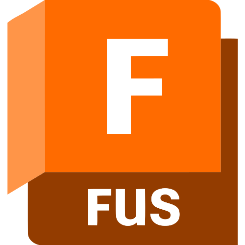
Fusion 360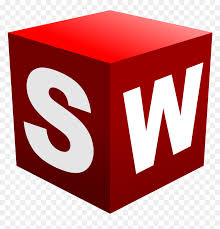
SolidWorks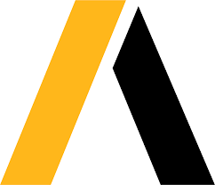
ANSYS MATLAB
MATLAB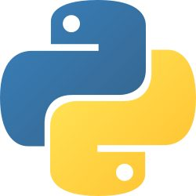
Python ROS2
ROS2Contact
I am currently looking for mechanical engineering, robotics, and manufacturing opportunities where I can contribute to real hardware systems.
zelko.dylan@hotmail.com